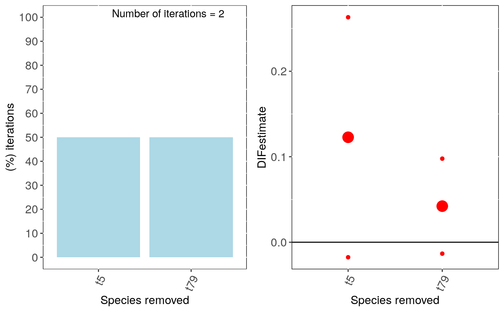

R/intra_influ_phyglm.R
intra_influ_phyglm.RdPerforms leave-one-out deletion analysis for phylogenetic logistic regression, and detects influential species, while taking into account potential interactions with intraspecific variability.
intra_influ_phyglm( formula, data, phy, Vx = NULL, n.intra = 30, x.transf = NULL, distrib = "normal", cutoff = 2, btol = 50, track = TRUE, ... )
| formula | The model formula: |
|---|---|
| data | Data frame containing species traits with row names matching tips
in |
| phy | A phylogeny (class 'phylo') matching |
| Vx | Name of the column containing the standard deviation or the standard error of the predictor
variable. When information is not available for one taxon, the value can be 0 or |
| n.intra | Number of datasets resimulated taking into account intraspecific variation (see: |
| x.transf | Transformation for the predictor variable (e.g. |
| distrib | A character string indicating which distribution to use to generate a random value for the response
and/or predictor variables. Default is normal distribution: "normal" (function |
| cutoff | The cutoff value used to identify for influential species (see Details) |
| btol | Bound on searching space. For details see |
| track | Print a report tracking function progress (default = TRUE) |
| ... | Further arguments to be passed to |
The function intra_influ_phylm returns a list with the following
components:
cutoff: The value selected for cutoff
formula: The formula
full.model.estimates: Coefficients, aic and the optimised
value of the phylogenetic parameter (e.g. lambda) for the full model
without deleted species.
influential_species: List of influential species, both
based on standardised difference in intercept and in the slope of the
regression. Species are ordered from most influential to less influential and
only include species with a standardised difference > cutoff.
sensi.estimates: A data frame with all simulation
estimates. Each row represents a deleted clade for an iteration of resimulated
data. Columns report the calculated regression intercept (intercept),
difference between simulation intercept and full model intercept (DIFintercept),
the standardised difference (sDIFintercept), the percentage of change in intercept compared
to the full model (intercept.perc) and intercept p-value
(pval.intercept). All these parameters are also reported for the regression
slope (DIFestimate etc.). Additionally, model aic value (AIC) and
the optimised value (optpar) of the phylogenetic parameter
(e.g. kappa or lambda, depending on the phylogenetic model used) are
reported.
data: Original full dataset.
errors: Species where deletion resulted in errors.
This function fits a phylogenetic linear regression model using phylolm, and detects
influential species by sequentially deleting one at a time. The regression is repeated n.intra times for
simulated values of the dataset, taking into account intraspecific variation. At each iteration, the function
generates a random value for each row in the dataset using the standard deviation or errors supplied, and
detect the influential species within that iteration.
influ_phylm detects influential species based on the standardised
difference in intercept and/or slope when removing a given species compared
to the full model including all species. Species with a standardised difference
above the value of cutoff are identified as influential. The default
value for the cutoff is 2 standardised differences change.
Currently, this function can only implement simple models (i.e. \(trait~ predictor\)). In the future we will implement more complex models.
Output can be visualised using sensi_plot.
When Vx exceeds X negative (or null) values can be generated, this might cause problems
for data transformation (e.g. log-transformation). In these cases, the function will skip the simulation. This problem can
be solved by increasing n.intra, changing the transformation type and/or checking the target species in output$sp.pb.
Setting n.intra at high values can take a long time to execute, since the total number of iterations equals n.intra * nrow(data).
Paterno, G. B., Penone, C. Werner, G. D. A. sensiPhy: An r-package for sensitivity analysis in phylogenetic comparative methods. Methods in Ecology and Evolution 2018, 9(6):1461-1467.
Ho, L. S. T. and Ane, C. 2014. "A linear-time algorithm for Gaussian and non-Gaussian trait evolution models". Systematic Biology 63(3):397-408.
if (FALSE) { #Generate data set.seed(6987) phy = rtree(100) x = rTrait(n=1,phy=phy,parameters=list(ancestral.state=2,optimal.value=2,sigma2=1,alpha=1)) X = cbind(rep(1,100),x) y = rbinTrait(n=1,phy=phy, beta=c(-1,0.5), alpha=.7 ,X=X) z = rnorm(n = length(x),mean = mean(x),sd = 0.1*mean(x)) dat = data.frame(y, x, z) # Run sensitivity analysis: intra_influ <- intra_influ_phyglm(formula = y ~ x, data = dat, phy = phy, Vx = "z", n.intra = 5,track = TRUE,distrib="normal",x.transf=NULL) # To check summary results and most influential species: summary(intra_influ) # Visual diagnostics for clade removal: sensi_plot(intra_influ) } # \dontshow{ phy = rtree(100) x = rTrait(n=1,phy=phy,parameters=list(ancestral.state=2,optimal.value=2,sigma2=1,alpha=1)) X = cbind(rep(1,100),x) y = rbinTrait(n=1,phy=phy, beta=c(-1,0.5), alpha=.7 ,X=X) z = rnorm(n = length(x),mean = mean(x),sd = 0.1*mean(x)) dat = data.frame(y, x, z) # Run sensitivity analysis: intra_influ <- intra_influ_phyglm(formula = y ~ x, data = dat[1:20,], phy = phy, Vx = "z", n.intra = 2,track = TRUE, distrib="normal",x.transf=NULL)#> Warning: distrib=normal: make sure that standard deviation is provided for Vx#> Warning: Some phylo tips do not match species in data (this can be due to NA removal) species were dropped from phylogeny or data#>#> | | | 0% | |=================================== | 50% | |======================================================================| 100%#> $`Most Common Influential species for the Estimate` #> Species removed (%) of iterations #> 1 t5 50 #> 2 t79 50 #> #> $`Average Estimates` #> Species removed Estimate DIFestimate Change(%) Pval #> 1 t5 0.3112292 0.12277099 239.90 0.1654295 #> 2 t79 0.2306591 0.04220087 27.25 0.4414887 #> #> $`Most Common Influential species for the Intercept` #> Species removed (%) of iterations #> 1 t17 50 #> 2 t5 50 #> 3 t79 50 #> #> $`Average Intercepts` #> Species removed Intercept DIFintercept Change(%) Pval #> 1 t5 -1.319858 -0.4108498 55.55 0.09778574 #> 2 t17 -1.113048 -0.2040398 21.35 0.14716088 #> 3 t79 -1.095681 -0.1866725 18.70 0.14986393 #>#> Warning: `fun.y` is deprecated. Use `fun` instead.# }